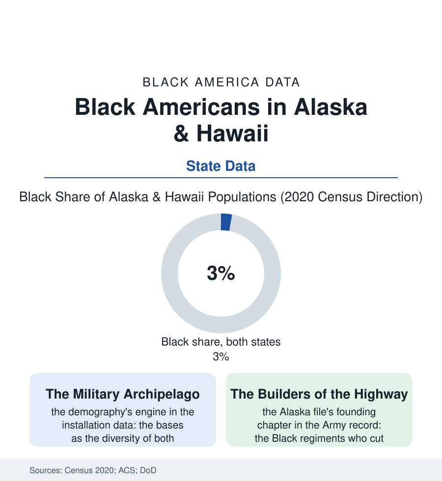

Black Census
The Far Corners: Black Americans in Alaska and Hawaii
The two noncontiguous states hold small, distinctive Black populations — built by the military, the pipeline, and the sea — whose institutions reproduce the whole kit at the edge of the map. The far-corners file.

The map of Black America has two far corners that the state files rarely reach: Alaska, where some 25,000 Black residents make up three to four percent of the state, and Hawaii, where a similar share of a much larger population carries a distinct island history. Neither community arrived by the Great Migration's rails. Both were built by the flag and the sea. This article reads the far-corners file.
The Highway and the Garrisons
Alaska's Black founding chapter is one of the war's great engineering stories, preserved in the Army's own record: the Alaska Highway of 1942, cut through eleven hundred miles of wilderness in eight months substantially by Black engineering regiments — the soldiers assigned the road's hardest northern stretches, working in cold their Southern training had not imagined, forbidden the towns their road connected — the highway standing as the community's literal foundation, a share of its builders staying on to become the territory's Black pioneers. What followed was the military archipelago's standard demography at high latitude: the great bases (Anchorage's and Fairbanks's installations among the Arctic's strategic furniture), the service members and their families constituting the community's renewable core, the retirees who stayed for the dividend and the dark and the fishing, the pipeline era's second wave (the oil economy's wages drawing the workforce of the 1970s, a Black migration in parkas), and Anchorage's emergence, in the diversity data, as one of America's most varied cities — its east-side neighborhoods and its mountain-view grids holding, beside the Black community, the nation's broadest small-city mix. The institutions reproduce the kit in miniature, per capita complete: the churches, the barbershops, the Juneteenth at latitude 61, the NAACP chapter older than statehood — the community's size making every institution personal and its cohesion, in the survey and oral data, a function of the cold: everybody knows everybody, because winter is long.
The faith file's far-corner rows complete the picture: Anchorage's and Honolulu's Black congregations functioning — as the military chapel's overflow and the community's hall — with a membership drawn from every region of the mainland, so that the far corners' churches are, denominationally and musically, small summits of the whole diaspora: the Delta's hymnody and Detroit's gospel and the islands' own traditions in one choir. The demographers do not survey choir repertoires. The file does, and reports the far corners in full voice.
The Islands' Different Sea
Hawaii's file begins earlier and stranger: the Black presence in the islands predating the overthrow — the sailors and the royal court musicians of the kingdom's century (the king's own band under a Black bandmaster's tradition in the record), the free Black settlers of the Pacific trade — before the plantation economy's labor imports largely bypassed Africa for Asia, leaving the modern community to be built, like Alaska's, by the military century: Pearl Harbor's and Schofield's generations, the war workers, the retirees — and layered, uniquely in this atlas, over the islands' own Indigenous dispossession, the Black community in Hawaii holding its small share inside a majority-minority state where it is neither the colonizer nor the colonized of the local story, a position the community's writers describe as the far corners' shared curriculum: how to be Black at three percent, among other people's majorities and other people's wounds. The data give both communities their signature rows: incomes buoyed by the military-and-government workforce's share, the homeownership file's military-lending chapters, the children in the school data negotiating curricula where the 1870 wall is not the local wall at all — and the out-migration's pull (the Lower 48's metros, the family's mainland gravity) against the far corners' famous hold on the people they suit. The census's state tables list both populations at a rounding error of the national count. The file's finding is that the rounding error contains the whole story in concentrate: the highway built in the cold, the band at the king's court, the church supper in the dark of December — Black America entire, at the map's edges, holding.
Reading the Far-Corners Data
The far-corners file is the census section's proof of range: the population at three percent, the kit at one hundred. The census counts the states. The highway — still the only road — counts the builders, every mile of it, in both directions.
More in Black Census
The Black Population of the United States: Size, Definitions, and Distribution
The Black population of the United States totals 52.8 million — 15.4 percent of the nation. How the Census Bureau defines and counts the population, and where it lives.
Black Median Household Income in the United States
Black median household income stands at $56,490 in the Census Bureau's annual income report — how the figure is measured, how it compares, and what drives it.
The Black Poverty Rate: Levels, Children, and the Long Trend
The official Black poverty rate is 17.1 percent — against 11.1 percent nationally and 7.7 percent for non-Hispanic White Americans. How poverty is measured and what the data show.
Source: U.S. Census Bureau, 2020 Census and American Community Survey 5-year estimates; Alaska and Hawaii state data; Department of Defense installation data.